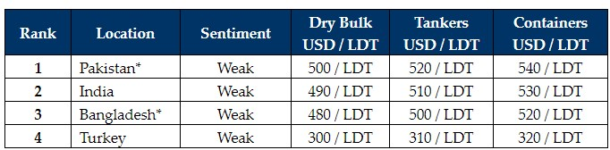

inWeekly Demolition Reports28/08/2023

The ongoing complications experienced in the Indian sub-continent ship recycling markets have shown few signs ofdissipating this week, with a sudden increase in the unrelenting non-existent supply of vessels and sparse L/C / financing approvals in Bangladesh and Pakistan, which has seen market pricing that is reaching new lows with each concurrent sale into the sub-continent destinations.
Notwithstanding, despite being moderately placed in the market rankings, India remains a beacon of hope amidst a dire 2023 recycling landscape, especially as a number of impressive deals were concluded here this week, perhaps suggesting that better days may well lie ahead for this market.
It is also reaching a point where various Owners and Cash Buyers are choosing to hold on to their unsold tonnage, rather than committing their units at these unexpected new lows of today that are consistently below USD 500/LT LDT – so unexpected have been the level of falls from over USD 600/LT LDT seen earlier this year.
As such, only after various Cash Buyers have disposed of their inventory and a period of calm and stability has been witnessed across the sub-continent markets, may we start to look upwards, especially after all these months of negativity. Particularly, once the constant rains come to a halt, may we see production restart and the backlog of material at the yards starts to shift again.
On the far-end, Turkey remains quiet as ever, with virtually no movement reported over recent weeks.
Overall, following the glut of dry bulk sales over the summer months, it has overall been an odd mix in the supply of vessels as container units have started to re-emerge once again, especially as rates across these two sectors struggle to post any significant profit above running costs. As such, if prices do begin to pick up from these current lows and financing / LC issues start to ease up in both Pakistan and Bangladesh, we may hopefully expect a busier fourth quarter, in addition to some more urgency / aggression to the present lethargy being witnessed.
For week 34 of 2023, GMS demo rankings / pricing for the week are as below.

📄 Download PDF: Ship-recycling-market-insight-week-34-2023-Better-Days.pdfSource: GMS,Inc. ,https://www.gmsinc.net/gms_new/index.php/web